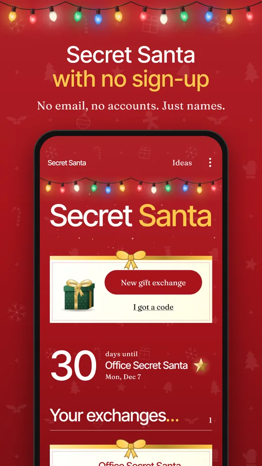
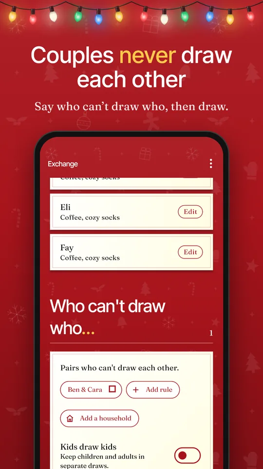
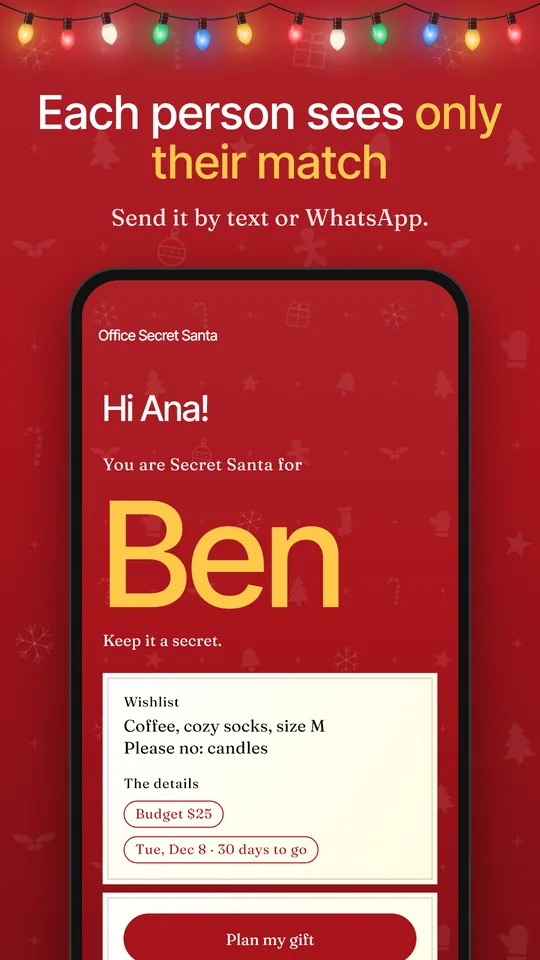
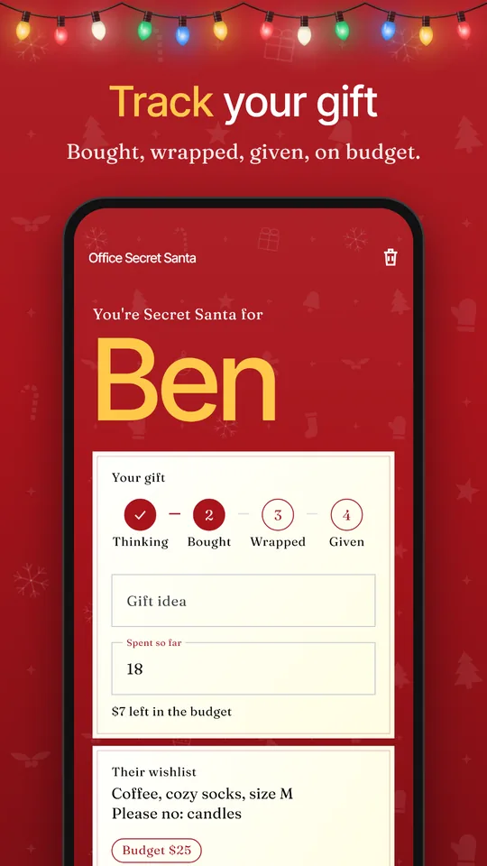

Secret Santa with no email and no sign-up
An Android app that draws names, keeps couples apart, and sends each person their match by text or WhatsApp. Free, with ads. Names and wishlists stay on your phone.
Get it on Google PlayAndroid only for now. Anyone reading a match message needs the app; for iPhones, use pass-the-phone mode or printed slips.




How it works
1. Add your group
Type names or paste a list. Nobody needs an account.
2. Draw names
Add any rules first, such as couples who can't draw each other.
3. Send each match
Tap a name to send that person their match by text, WhatsApp or email. They paste the message into the app to see it.
What it does
Draw names
Paste a whole list at once, then draw. Works for any group of 3 or more.
Set the rules
Keep couples and households apart, split kids from adults, and avoid last year's matches.
Collect wishlists
Guests send back what they'd love, their sizes, links and anything to avoid.
Plan the gift
Budget, countdown, optional reminders, and a tracker from thinking to given.
Find ideas
160 gift ideas by interest and budget, from $10 to $10,000.
Run the day
Reveal party, White Elephant gift swap with a steal counter, printable slips and thank-you cards.
Questions
Can you do Secret Santa without email or sign-up?
Yes. The organizer adds names, draws, and sends each person a message through any chat app. Nobody creates an account or gives an email address.
How do you do Secret Santa on WhatsApp?
Add the names and draw in the app, then tap each name and choose WhatsApp. Send each message to that person alone, not the group. They install the app and paste the message to see their match.
Does everyone need the app?
Anyone reading a match message needs the app, and it is Android only for now. If someone in your group has an iPhone, use pass-the-phone mode in the same room, or print the reveal slips.
Can you do Secret Santa with an odd number of people?
Yes. Everyone gives one gift and receives one, so nobody needs a pair. The app works with any group of 3 or more.
Can you do Secret Santa with 3 people?
Yes, but each person can work out who drew them. With three people the gifts can only go around in a circle, so knowing your match reveals your Santa. Four or more keeps more of the mystery.
How do I stop couples drawing each other?
Add a pair under "Who can't draw who", or use "Add a household" to keep a whole family apart. If the rules leave no possible draw, the app tells you.
How do you do Secret Santa with family and kids?
Turn on "Kids draw kids" to keep children and adults in separate draws. It switches off with a notice if either group is too small to swap.
How do you avoid getting the same person as last year?
Use "Start next year" on an old exchange. It copies the people, rules and budget, and avoids last year's matches when possible. It tells the organizer if the group is too small to avoid them all.
How do you run Secret Santa at work?
Set the budget, date and a note, then send each colleague their match privately. For teams who would rather not install anything, print the reveal slips: six fold-over slips to a page.
Can the organizer see who got who?
Only by choosing to. The list stays hidden unless the organizer opens "Show all matches", and the app warns that this spoils the surprise. Match codes are scrambled, not encrypted, so they would not stop someone determined to decode one.
What if someone drops out after the draw?
The organizer can keep the draw. That person's Santa takes over their recipient, so only one or two people need a new message. The app warns that this can hint at who they drew, and offers a full redraw.
Is the app free?
Yes, and it shows ads. The draw, rules, wishlists and planner cost nothing. Six extra wall colors and two card designs unlock by watching a short video.
Where do names and wishlists go?
They stay on your phone. There are no accounts and no server receiving them. The ads come from Google AdMob, which may collect device data such as the advertising ID, and the app asks for consent where the law requires it.
Does it work for Kris Kringle or White Elephant?
Yes. Kris Kringle is another name for the same draw. White Elephant has its own mode, with a random turn order, a steal counter and a final swap.
How do I move to a new phone?
Make a backup code on the old phone and paste it on the new one. Restoring only adds what is missing.